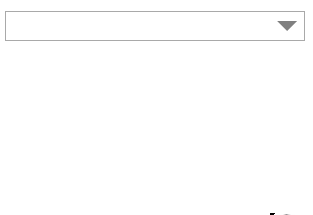
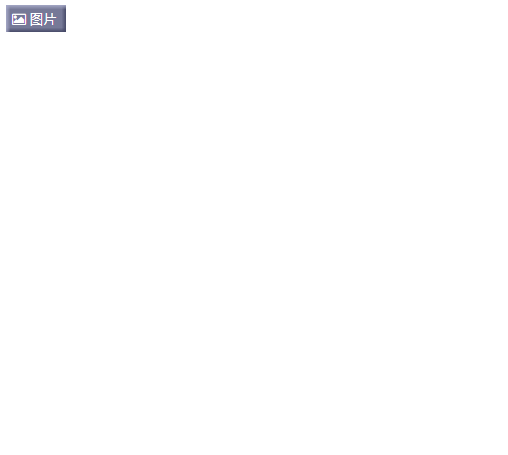

| 插件描述和代码连接 | 实现效果图 |
|---|---|
| 自定义多选框实现 链接(custom_check_box.html) |
 |
|
仿微博风格多图上传 链接(multi_pics_upload.html)
|- mul_pics_upload.html
|- / js |- / plupload |_ Moxie.swf |_ Moxie.xap |_ plupload.min.js |- jquery.min.js |- / PHP |_ up_pics.php |_ / files |
 |